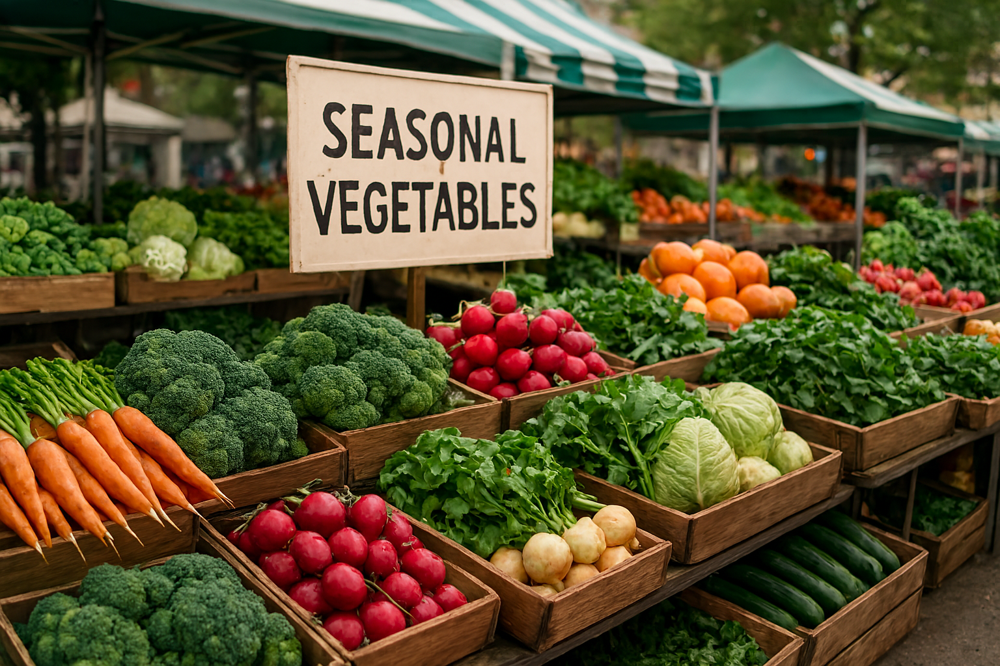

Wat je elke dag eet en koopt, heeft meer invloed op het milieu dan je misschien denkt. Van de productie van vlees tot de verpakking van groenten: elke keuze maakt verschil. Gelukkig kun je ook met een klein budget duurzamer boodschappen doen en zo tegelijkertijd iets goeds doen voor jezelf én de wereld.
Lokaal en seizoensgebonden
Kies voor lokaal en seizoensgebonden
Een makkelijke stap is om vaker producten uit de buurt en van het seizoen te kopen. Aardbeien in december komen vaak van ver en kosten veel energie om te produceren. In de zomer zijn ze juist volop verkrijgbaar en veel goedkoper.
In Alkmaar kun je bijvoorbeeld terecht op de Boerenmarkt op het Waagplein of bij lokale groenteboeren. Daar vind je vaak verse, seizoensgebonden producten zonder onnodige verpakking. Ook supermarkten zoals Dekamarkt en Vomar zetten steeds vaker streekproducten in de schappen.

Minder vlees, meer variatie
Vleesproductie heeft een grote impact op het milieu, vooral door de uitstoot van broeikasgassen en het waterverbruik. Dat betekent niet dat je meteen vegetariër hoeft te worden, maar elke dag minder vlees eten helpt al.
Goede alternatieven zijn:
- Peulvruchten zoals linzen, kikkererwten en bonen.
- Tofu en tempeh als plantaardige eiwitbronnen.
- Noten en zaden als gezonde toevoeging.
Veel supermarkten hebben tegenwoordig een breed aanbod vleesvervangers die betaalbaar én lekker zijn.

Voorkom voedselverspilling
Wist je dat een gemiddeld huishouden in Nederland zo’n 34 kilo voedsel per jaar weggooit? Dat is zonde voor je portemonnee en voor het milieu.
- Plan je maaltijden voor een paar dagen vooruit.
- Bewaar restjes in de koelkast of vries ze in.
- Check de “ten minste houdbaar tot”-datum.
- Koop slim in: ga liever vaker en kleiner boodschappen doen.
Let op verpakkingen en plastic
Veel duurzame keuzes gaan niet alleen om wát je koopt, maar ook hóe het verpakt is. Kies voor groenten en fruit zonder plastic folie, neem een herbruikbare boodschappentas mee en gebruik navulbare flessen of potjes.
Steeds meer winkels in Alkmaar bieden duurzame verpakkingsopties. Denk aan de Ekoplaza of de verpakkingsvrije winkel bij lokale markten.
Waarom duurzaam eten loont
Duurzaam boodschappen doen hoeft niet duurder te zijn. Door slim te kopen en minder weg te gooien, bespaar je geld en eet je vaak gezonder.

Handige tips op een rij
- Koop lokaal en seizoensgebonden producten.
- Eet minder vlees en kies vaker voor plantaardige alternatieven.
- Plan je maaltijden en vries restjes in om verspilling te voorkomen.
- Let op verpakkingen en neem je eigen tasje of bakje mee.
- Ontdek duurzame winkels en markten in Alkmaar zoals Ekoplaza en de Boerenmarkt op het Waagplein.